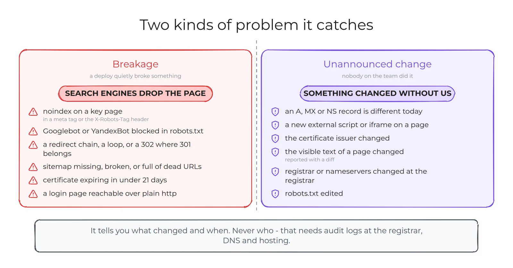

The problem
Two different things go wrong with a website, and neither one announces itself.
Breakage. A release ships a stray noindex, a robots.txt rule blocks a crawler, a redirect turns into a chain or a loop, a sitemap starts pointing at pages that are gone. Nothing looks broken in a browser. Traffic falls weeks later.
Change nobody announced. A DNS record is different today. A new script appears on a page. The certificate has a new issuer. Somebody may have had a good reason — but the team should hear about it the same day, not next quarter.
Uptime monitors answer a different question. They tell you the server replied. They do not tell you the server replied with a page that search engines will now ignore.
What arrives in the morning
One message. Sites with nothing wrong are folded into a single line, so the length of the report is the size of the problem.
🧾 Талон — 4 сайта · 1 домен
12.11.2026 · 09:00 MSK
login.example.com
❌ Redirects: http://login.example.com отдаёт 200 без перехода на https
⚠️ Pages: вход https://login.example.com/auth открыт для индексации
example.com
⚠️ Redirects: http://example.com — 2 перехода вместо одного
⚠️ SSL: осталось 12 дней (www.example.com)
⚠️ Headers: нет Strict-Transport-Security
✅ Без замечаний (2): shop.example.com, status.example.com
Итог: 2 ✅ · 1 ⚠️ · 1 ❌Example output. The report is written in Russian, because the team it was built for works in Russian; every string lives in one file, so another language is a translation, not a rewrite. Four statuses, and only two of them are problems: fail hurts indexing, users or security right now, warn needs fixing but not today, ok, and info for anything the tool did not judge — a baseline it has just saved, or a registry that publishes no data. Info is never counted as a problem, so the summary line can be trusted.
The chat gets the short version. Every redirect chain, text diff and DNS record set goes to a JSON log next to the run.

The eight checks
- Redirects. Every way into the site — with and without
www, http and https — should make exactly one permanent hop to the canonical address. The tool walks each chain by hand and records every hop, so "two redirects instead of one" and "a temporary 302 where a permanent 301 belongs" are separate findings. - robots.txt. Parsed with the same matching rules Google uses, not the standard library's older parser. It fails if a key page is closed to Googlebot or YandexBot, warns when an AI crawler is newly blocked, and shows a diff whenever the file changes.
- Sitemap. Follows sitemap index files, checks that the URLs answer directly, and warns when the URL count collapses.
- Pages. Status,
noindexin a meta tag or in theX-Robots-Tagheader, canonical, title, description, response time. - Login portals get the opposite rules. A customer login page should not be indexable, must not be reachable over plain http, and its form must post to its own host. A form that quietly starts posting somewhere else is how credentials get stolen.
- Certificates. Covers the host, 21 days to warn, 7 to fail — and the issuer is compared with yesterday's, because traffic reaching a different server shows up there first.
- DNS. Every record type, asked of public resolvers and of the authoritative nameserver, compared against records you pin in the config or against yesterday's answer. Address and nameserver changes fail, text records warn, and resolvers disagreeing with the authoritative answer is its own warning.
- Content and headers. The visible text of each key page is normalised and hashed, so a change produces a diff rather than a vague alarm; a new external script, iframe or stylesheet domain fails on sight. Headers cover HSTS and a
Serverstring that gives away its version.
The decisions that make it trustworthy
A monitor that cries wolf gets muted, and a muted monitor is worse than none. Most of the work went into that.
- Read-only, and provably so. GET and HEAD requests and DNS queries. The request helper refuses any other method, so there is no path through the code that posts anything to a watched site. Login pages are opened and read, never submitted to.
- A failed check never becomes the new truth. Baselines are written only after a check succeeds. A network blip cannot silently redefine "normal", which is the classic way a change detector goes blind.
- One retry before anything is called dead, and a host that does not answer is reported as unreachable rather than as a broken certificate. They are different problems and they go to different people.
- A crashing check is one failed line, caught with its traceback and reported as itself. The other seven still run.
- It refuses to guess. Anything the tool cannot know — which host is canonical, which pages matter, which external scripts are expected — stays an open question in the config, and the tool refuses to run for real until a human fills it in.
- Secrets never touch the config. It names the environment variables to read; the bot token and chat id live outside the repository.
- Quiet by default. The hourly watch sends nothing unless something changed or failed. Noisy per-URL findings are aggregated into one line, with the full list in the log.
- 64 tests, no live traffic. Redirect loops, a blocked crawler, a certificate five days from expiry, an issuer swap, a DNS record change, a new external script, a report over Telegram's length limit — all reproduced from fixtures, so the suite runs in seconds and never knocks on a real server.
What it will not tell you
It says what changed and when. It cannot say who: that needs per-user accounts and audit logs at the registrar, the DNS provider and the hosting. I wrote that into the README rather than leaving a monitoring tool to imply more certainty than it has. A change alert is a question to go and ask, not an answer.
Running it
It was built for a real estate of 14 sites and 7 domains, and the public version ships with an example configuration instead. Nothing about any site is hard-coded.
git clone https://github.com/elkushi/talon.git && cd talon
python3.12 -m venv .venv
.venv/bin/pip install httpx lxml dnspython protego PyYAML
cp config.example.yaml config.yaml
.venv/bin/python -m talon --mode daily --dry-run--dry-run prints the report instead of sending it, so you can see what it would say before any bot exists. In production it is two cron lines: the daily report in the morning, the change watch every hour — on a machine that does not host the sites it watches, so an outage cannot take the monitor down with them.